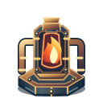
Медное сердце600 кредитов · 9 / 0,8 с

Меха и жаропрочные каналы → сердце горна → перегретый реактор → высокий колосс с тремя пламенными рукавами.
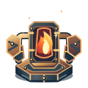
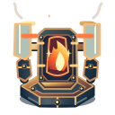
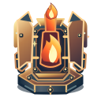
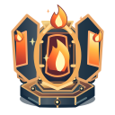
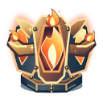
Сбор света линзами → призменная оптика → корона волн → пульсар → парящая сфера над тремя сияющими лепестками.
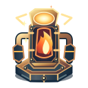
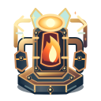
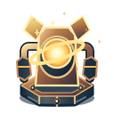
Заряд из искр → магматическая смесь → кратерный ствол → двойные вулканы → три дымящихся жерла и лавовые хвосты.
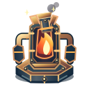
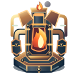
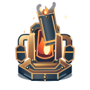
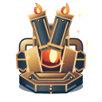
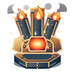
Основной полный T5-SVG сохранён. Второй путь подключается отдельной прозрачной накладкой T2 — без замены силуэта.
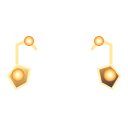
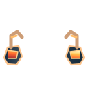
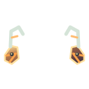
Отдельные прозрачные SVG для T1 и T2 каждой ветки. Здесь показаны поверх базового корпуса для проверки геометрии и читаемости.
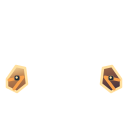
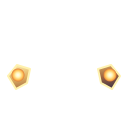
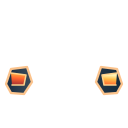